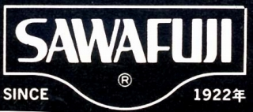
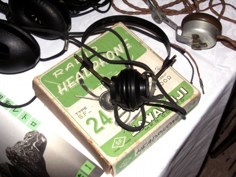
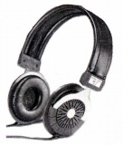
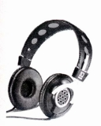

SAWAFUJI（サワフジ）
1922年（大正11年）創業の老舗音響機器メーカー。第2次世界大戦前から鉱石ラジオ用レシーバーなどを製作していた。

（鉱石ラジオ用レシーバー。初期的な電磁型の製品。後の製品と同様に「SF」の型番を使用している）
ヘッドフォンについても古くからかかわり、1978年の時点でヘッドフォンの振動板製作30年とする記事もあった。ダイナプリーツ型と呼ぶ平面駆動型スピーカーを得意としたメーカーで、ヘッドフォンについても同じ原理の動電全面駆動型の製品を作っていた。ヘッドフォンについては確認できないが、スピーカーについてはボイスコイルと一体となったダイヤフラムを「蛇腹状に折り畳む」構造とされており、どこかハイルドライバーを連想させる表現である。カタログスペックでの周波数帯域は現在のハイレゾ対応モデル並み（ローエンドモデルで20-40,000Hz、トップモデルは15-100,000Hz）であった。
2001年に（株）エフ・ピー・エスと技術提携し、事業からは後退したらしい。
＊鉱石ラジオ用レシーバーについて豊永尚輝 氏所有機の画像を使用しました。ありがとうございます。
（動電全面駆動型） SF-1 SF-7ST SF-16 SF-17


（左 SF-7ST 右 SF-17)